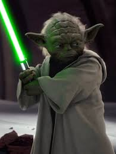
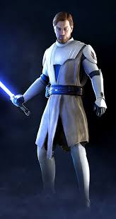
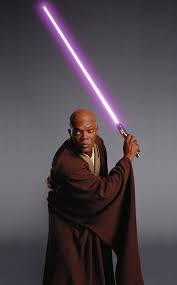
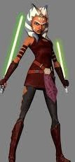
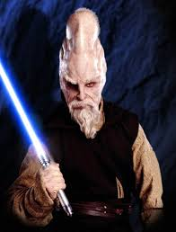
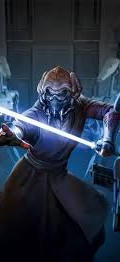

Jedi Generals of the Clone Wars
Commanders of the Grand Army of the Republic and defenders of peace in the galaxy.
Key Jedi Generals:
-
Yoda — Supreme Commander of the Jedi Order and Grand Master. Led Republic forces broadly as the highest authority.
 -
Obi-Wan Kenobi — Led the 212th Attack Battalion, known for strategic brilliance and exceptional lightsaber skills.
 -
Anakin Skywalker — Commanded the 501st Legion, famed for his daring and tactical genius.
-
Mace Windu — High-ranking Jedi General involved in key battles and council decisions.
 -
Ahsoka Tano — Led independent squads and special missions, known for resourcefulness and courage.
 -
Ki-Adi-Mundi — Led the Galactic Marines, recognized for his calm leadership and tactical skills.
 -
Plo Koon — Commanded the 104th Battalion alongside Ki-Adi-Mundi, known for his leadership and wisdom.
